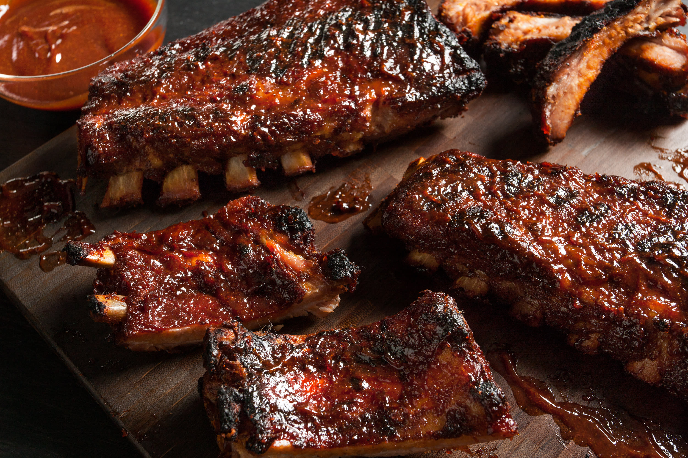
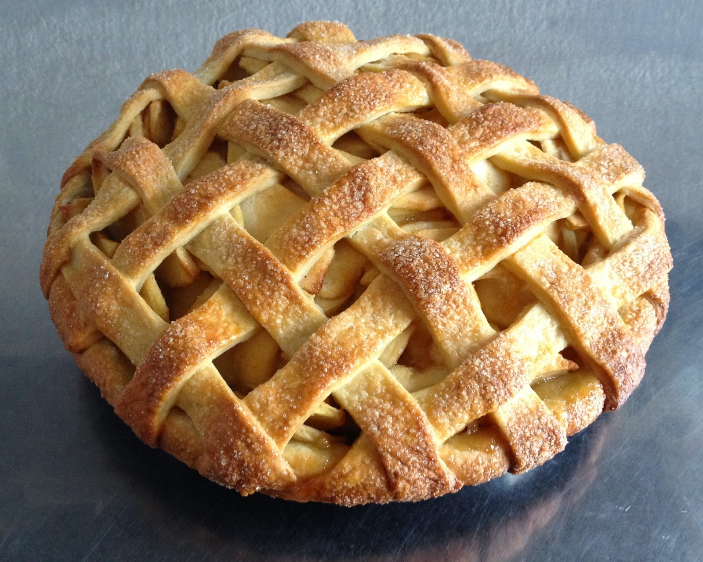

Entrada

Buffalo Wings
Alitas crujientes bañadas en salsa picante estilo Buffalo, acompañadas de aderezo ranch y bastones de apio.
Plato Fuerte

BBQ Pork Ribs
Costillas suaves con salsa BBQ ahumada, más puré de papa y elote dulce a la mantequilla.
Postre

← Regresar
American Apple Pie
Tarta clásica de manzana con especias y helado de vainilla. El postre más icónico de EE.UU.